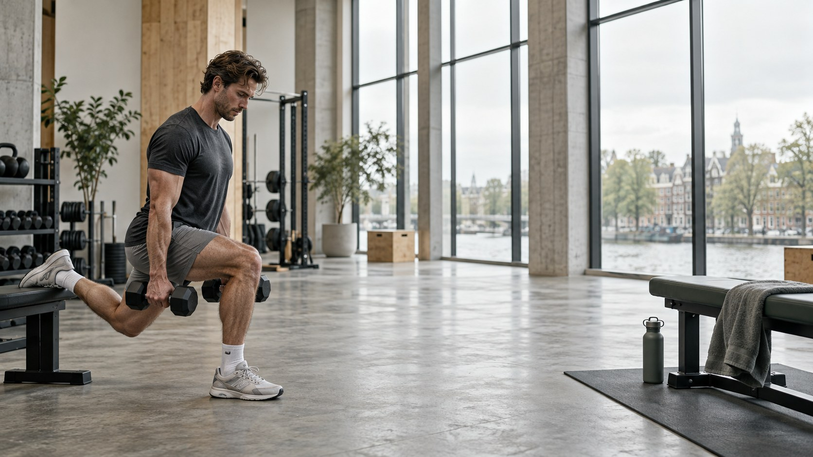

HERSTEL. TRAINING. WEER MEEDOEN.
Van de
behandelkamer
naar het sportveld.
Je werkt ergens naartoe. Je fysio helpt je op weg.
Performance Plus houdt je programma bij je.

HET WERK TUSSEN DE AFSPRAKEN
Je doel ligt
buiten de praktijk.
Weten wat je doet.
Je programma staat klaar. Je hoeft alleen je sessie erbij te pakken.
Voelen hoe het gaat.
Een korte check-in maakt ruimte voor hoe je lichaam vandaag voelt.
Samen verder kijken.
Neem je ervaringen mee naar je afspraak. Dan bepaal je samen de volgende stap.
DE APP, VAN DICHTBIJ
Voor de dagen
ertussen.
Een programma is pas handig als je het ook gebruikt. Daarom staan je sessies, check-ins en voortgang bij elkaar.
Je fysio zet het programma klaar. Jij vindt je sessies terug in de app, op het moment dat je ermee aan de slag gaat.

VAN AFSPRAAK NAAR ACTIE.VOOR DE PRAKTIJK
Jij kent de cliënt.
De app houdt het
programma dichtbij.
De juiste oefening begint bij jouw begeleiding. Performance Plus geeft cliënten een vaste plek om het programma terug te vinden en hun ervaringen vast te leggen.
Zodat je volgende gesprek kan beginnen bij wat er de afgelopen week echt gebeurde.
PRAKTISCHE VRAGEN
Voor je begint.
Is dit alleen voor topsporters?
Nee. Het gaat om jouw programma en jouw doel. Dat kan terugkeren naar sport zijn, maar ook weer vrijer bewegen in het dagelijks leven.
Wat zie ik in deze rondleiding?
Drie bestaande schermen van de cliëntapp: het weekprogramma, de check-in en persoonlijke voortgang. De rondleiding is een weergave van schermen, geen ingelogde app.
Kan ik dit voor mijn praktijk bespreken?
Ja. met je vraag en praktijknaam. Je kunt dit eerst bekijken en daarna zelf vanuit je e-mailprogramma versturen.
WAT IS JULLIE VOLGENDE STAP?